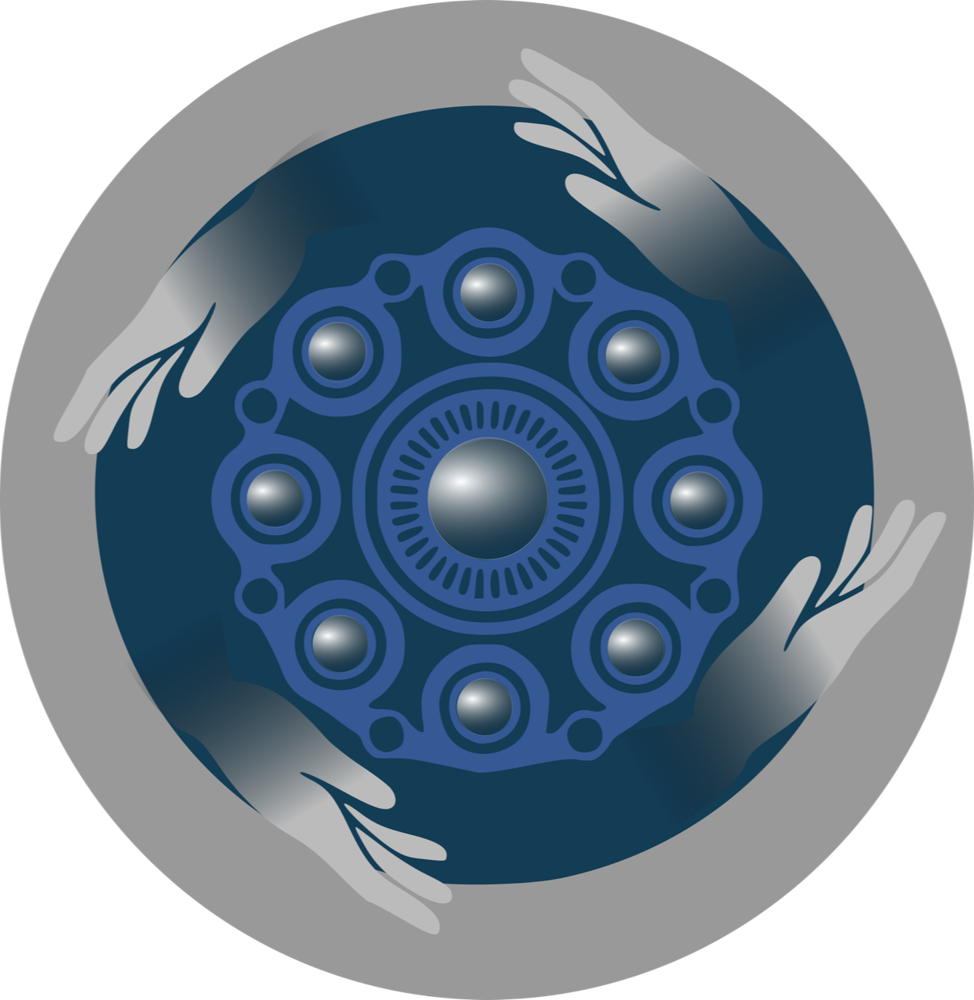

 Zeeuwse Handen
Zorg en hulp in 's-Gravenpolder
Wij zijn een organisatie van vrijwilligers. Vanuit een christelijke visie bieden we hulp aan mensen die een vraag hebben op gebied van zorg en welzijn. De hulp die verleend wordt is beschikbaar voor iedere inwoner van 's-Gravenpolder ongeacht levensovertuiging. Onze vrijwilligers hebben een geheimhoudingsplicht.
Nadat wij een aanmelding binnen krijgen, gaat één van de coördinatoren naar de hulpvrager(s) toe om de hulpvraag duidelijk te krijgen. Wij kijken ter plekke of het iets is wat onze vrijwilligers op kunnen pakken, of verwijzen door naar gemeente/WMO of het eigen netwerk. De hulpvragen komen bij ons binnen via de familie, omwonenden, huisarts, vrijwilligershuis en de kerken. Onderstaand enkele voorbeelden van hulpvragen.
Ontlasten mantelzorgers
Eget mattis at, laoreet vel et velit aliquam diam ante, aliquet sit amet vulputate et magna feugiat laoreet vel velit lorem.
Bezoek
Eget mattis at, laoreet vel et velit aliquam diam ante, aliquet sit amet vulputate et magna feugiat laoreet vel velit lorem.
Boodschappen
Eget mattis at, laoreet vel et velit aliquam diam ante, aliquet sit amet vulputate et magna feugiat laoreet vel velit lorem.
Wandelen
Eget mattis at, laoreet vel et velit aliquam diam ante, aliquet sit amet vulputate et magna feugiat laoreet vel velit lorem.
Vervoer
Eget mattis at, laoreet vel et velit aliquam diam ante, aliquet sit amet vulputate et magna feugiat laoreet vel velit lorem.
Koken
Eget mattis at, laoreet vel et velit aliquam diam ante, aliquet sit amet vulputate et magna feugiat laoreet vel velit lorem.
Tijdelijke kinderopvang
Eget mattis at, laoreet vel et velit aliquam diam ante, aliquet sit amet vulputate et magna feugiat laoreet vel velit lorem.
Koffie schenken (Vorsvliet)
Eget mattis at, laoreet vel et velit aliquam diam ante, aliquet sit amet vulputate et magna feugiat laoreet vel velit lorem.
Gespreksgroep (Vorsvliet)
Eget mattis at, laoreet vel et velit aliquam diam ante, aliquet sit amet vulputate et magna feugiat laoreet vel velit lorem.
Licht huishoudelijk werk in crisissituaties
Eget mattis at, laoreet vel et velit aliquam diam ante, aliquet sit amet vulputate et magna feugiat laoreet vel velit lorem.
Het vrijwilligerswerk in 's-Gravenpolder bestaat al ruim twintig jaar. Sinds 2018 mogen wij dit werk coördineren. Wij zijn Tineke van Ruitenburg, Elleke Sturm, Petra van Veen en Mieke van de Vreede. Wij hebben alle vier een achtergrond in de zorg of welzijn. Inmiddels zijn er ruim tachtig vrijwilligers aangesloten en wordt er veel hulp geboden.
Het is prachtig om de reacties van onze klanten te horen.
“Ik ben heel blij dat ze boodschappen met me gaan doen, zo kan ik toch zelf kiezen in de winkel wat ik nodig heb. Ik heb geweldige vrijwilligers”
Heeft u hulp nodig of wilt u meer informatie. Neem dan contact op via onderstaande contactgegevens.
Telefoon
06-24442038

- © Zeeuwse Handen.
- Ontwerp: HTML5 UP